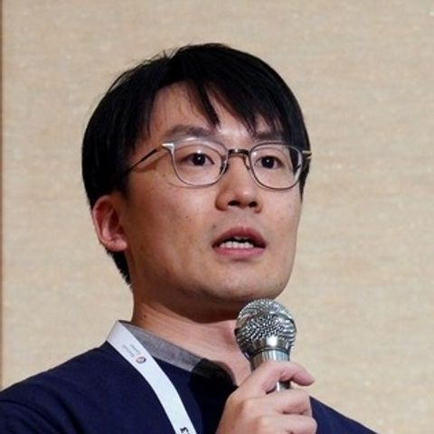
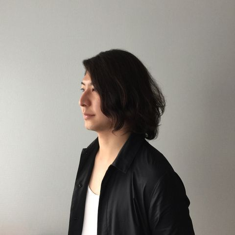

WISS委員一覧
WISS 2024実行委員
プログラム委員長
- 塚田 浩二 [web]
- 所属：はこだて未来大学
- 専門：日用品インタフェース，マテリアルインタラクション，プロトタイピング
実行委員長
- 渡邊 恵太 [web]
- 所属：明治大学
- 専門：インタラクションデザイン，デジタルファブリケーション，ブレインコンピュータインタラクション，触覚インタラクション
副実行委員長
- 松村 耕平
- 所属：立命館大学
- 専門：身体性認知科学，プレイフルネス
会計
丸山 一貴，松村 耕平
出版・デザインコンペ
石井 綾郁，越後 宏紀
広報・学会リエゾン
辻田 眸
WISSチャレンジ
門本 淳一郎
会場
佐藤 俊樹
投稿システム
三浦 元喜
参加者管理・チャット・Scrapbox
西田 健志
動画生中継
高田 崚介，藤田 和之
デモ・ポスター
鳴海 紘也，高橋 治輝,渡邉 拓貴
ネットワーク
奥本 隼，米田 英正
Web・サーバー
福里 司，山本 和彦
投票
高橋 亮
懇親会
五十嵐 悠紀，吉田 博則
表彰
栗原 一貴，三上 浩司
企業スポンサー
秋山 耀，清木 昌
学生ボランティア
宮藤 詩緒，大西 鮎美
WISS 2024プログラム委員
秋山 耀 [web]
- 所属：チームラボ
- 専門：デジタルテクノロジーを使用したアート
五十嵐 悠紀 [web]
- 所属：お茶の水女子大学
- 専門：コンピュータグラフィックス，ヒューマンコンピュータインタラクション（HCI），ファブリケーション
石井 綾郁 [web]
- 所属：NTTコミュニケーション科学基礎研究所
- 専門：ユビキタスコンピューティング，実体インタフェース，日用品インタフェース
越後 宏紀 [web]
- 所属：ソフトバンク株式会社
- 専門：ICT教育，ヒューマンコンピュータインタラクション（HCI），コミュニケーション支援
大西 鮎美 [web]
- 所属：神戸大学
- 専門：ウェアラブルコンピューティング，ユビキタスコンピューティング，行動認識

奥本 隼 [web]
- 所属：TwoGate
- 専門：技術経営，アプリ開発，ソフトウェア工学
門本 淳一郎
- 所属：東京大学
- 専門：タンジブルユーザインタフェース，ユビキタスコンピューティング
栗原 一貴 [web]
- 所属：津田塾大学
- 専門：ヒューマンコンピュータインタラクション（HCI），エンタテインメントコンピューティング
小池 英樹 [web]
- 所属：東京工業大学
- 専門：Vision-based HCI，Projector-Camera Systems，Augmented Human
後藤 真孝 [web]
- 所属：産総研
- 専門：音楽情報処理，歌声情報処理，メディアインタラクション
坂本 大介 [web]
- 所属：北海道大学
- 専門：ユーザインタフェース設計と評価，ユーザビリティ，ユーザ体験（UX）

佐藤 俊樹
- 所属：JAIST
- 専門：プロジェクタカメラシステム，AR，タンジブル五感提示

清木 昌 [web]
- 所属：ほぼ日
- 専門：エンタテインメントコンピューティング，xR，リアルタイム通信
高田 崚介 [web]
- 所属：神戸市立工業高等専門学校
- 専門：入力インタフェース（特に文字入力・データグローブ・センサ応用），導電繊維センシング
高橋 治輝 [web]
- 所属：立命館大学
- 専門：ヒューマンコンピュータインタラクション（HCI），デジタルファブリケーション
高橋 亮 [web]
- 所属：東大
- 専門：ウェアラブルコンピューティング，IoT，無線センシング・通信・給電
塚田 浩二 [web]
- 所属：はこだて未来大学
- 専門：日用品インタフェース，マテリアルインタラクション，プロトタイピング
辻田 眸
- 所属：
- 専門：ヒューマンコンピュータインタラクション（HCI），遠隔コミュニケーション支援


鳴海 紘也 [web]
- 所属：慶應大
- 専門：コンピュテーショナル・ファブリケーション
西田 健志
- 所属：神戸大
- 専門：コミュニケーション支援，デジタルウェルビーイング
福里 司 [web]
- 所属：早稲田大学
- 専門：コンピュータグラフィックス，ユーザインタフェース
藤田 和之 [web]
- 所属：東北大学
- 専門：空間ユーザインタフェース，バーチャルリアリティ，知覚情報処理
松村 耕平
- 所属：立命館大学
- 専門：身体性認知科学，プレイフルネス
丸山 一貴 [web]
- 所属：明星大学
- 専門：プログラミング環境，Webユーザインタフェース，大学ICTサービス
三浦 元喜
- 所属：千葉工大
- 専門：
三上 浩司
- 所属：東京工科大学
- 専門：ゲームデザイン，ゲーム開発，バーチャルリアリティ

山本 和彦 [web]
- 所属：YAMAHA
- 専門：機械学習，ヒューマンコンピュータインタラクション（HCI），音楽情報処理
吉田 博則
- 所属：はこだて未来大
- 専門：計算木工，計算転用，建築デザイン
米田 英正
- 所属：Helpfeel
- 専門：
渡邊 恵太 [web]
- 所属：明治大学
- 専門：インタラクションデザイン，デジタルファブリケーション，ブレインコンピュータインタラクション
渡邉 拓貴 [web]
- 所属：はこだて未来大
- 専門：ウェアラブル・ユビキタスコンピューティング，人間行動認識，音響センシング